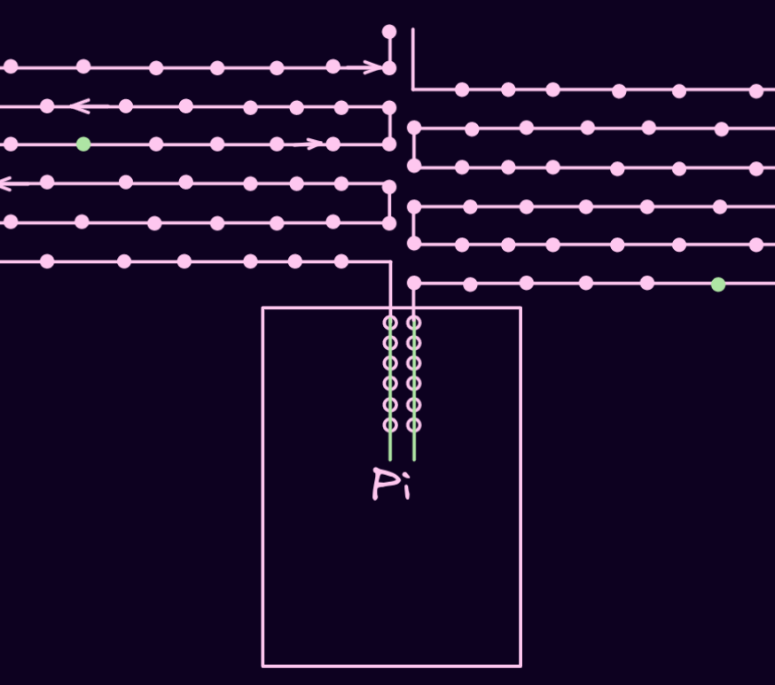
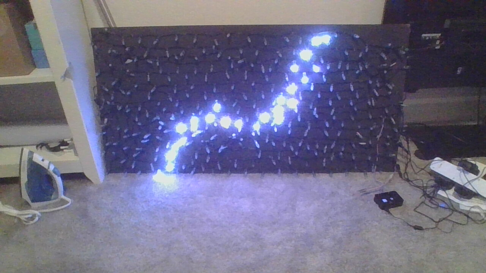

Doubled Lines
The last real part of the lighting for this project (for now) comes in the form of
an optimization. At this point, it was really slow
to get data all the way to the end of the strip of lights (picture to explain). Now, PWM is really fast,
but it doesn't really get to shine
when there are microcontrollers that have to stop the data, process it, and pass it on again at every
light. They takes AGES (microseconds) to get anything
done, so it seems natural to try to bypass them. My thought was simple, why not use two different data
lines to pass information and section the lights
into even parts, that way I can simultaneously pass data into 150-light sections, HALVING the time it
takes for the lights to get their information.
Sadly, in the code itself, you have to check whether a light is of a certain index, and that alone is enough to account for the time saved. However, there are more than just speed improvements to be had here. The lights use a combination of power from an external power supply with the 5 volts supplied from the raspberry pi's GPIO pins, by separating the lights into two sections, I effectively double the amount of power I can put into the lights, leading them to be brighter and to flicker less. Also, it means that I can use fewer raspberry pis to control more lights (half as many to be exact).
But the sugarplum fairly land of theory must come to an end.
Sadly, in the code itself, you have to check whether a light is of a certain index, and that alone is enough to account for the time saved. However, there are more than just speed improvements to be had here. The lights use a combination of power from an external power supply with the 5 volts supplied from the raspberry pi's GPIO pins, by separating the lights into two sections, I effectively double the amount of power I can put into the lights, leading them to be brighter and to flicker less. Also, it means that I can use fewer raspberry pis to control more lights (half as many to be exact).
But the sugarplum fairly land of theory must come to an end.

Here is the issue. When I created the code to split the output into two data lines,
something strange happened. Basically, I had the code
to show all of the updated lights on line one run before showing the updated lights on line two (the code
runs fast enough that there is
not a noticable delay), but the two outputs overrode the other line. This would cause, say, the bottom 150
lights to update both halves and the
top 150 lights would update both halves as well. It turns out that while the raspberry pi has multiple
(5+) dataouts (GPIO pins) that the lights can interpret,
there are only two LINES of output. Basically, GPIO 18 will get the same signal as, say, GPIO 22, but GPIO
23 will have a different signal as GPIO 18.
A diagram would be best.
As you can see, there are two different lines that cover multiple output pins (the holes) and they produce individual outputs. Moving the wire vertically would not change the output thought it would change the pin number, moving horizontally would change the output and the pin number. So, you can only get 2 different outputs on the different lines, great, let's use some different pins and ... it still didn't work.
As you can see, there are two different lines that cover multiple output pins (the holes) and they produce individual outputs. Moving the wire vertically would not change the output thought it would change the pin number, moving horizontally would change the output and the pin number. So, you can only get 2 different outputs on the different lines, great, let's use some different pins and ... it still didn't work.

At this point, it had been a few days (about 5) and I decided to turn to the library that all of this code
is written on. The library itself is really just
a massive compilation of C code as C was probably the best language to write code that deals with PWM in.
C is illegible, at least for me, as someone who
had, up to this point, dealt exculsively in highly abstracted high-level languages. For this, I had to
employ my father. After some small lessons as well as
a doomscroll through the code, we found several hints to the existence of multi-line functionality.
After a couple days, while having a look at the issue, my father tried a simple package reinstall. And that was it. We tested the lights again and the lights were being properly separated into their individual lines. I have added a video with me goofing around with the separate data lines.
At first, they run normally with two lines, then I take out the line for the bottom half to see them pause. Then I plug the 5 volt power line into the dataline. The voltage waveform is not as managed as it is for PWM and so the data being sent is just about as random as you can get. Since the microcontrollers on each LED only know 24 bit color values, they take a truly random value. I then plug them back in normally and look at the result.
After a couple days, while having a look at the issue, my father tried a simple package reinstall. And that was it. We tested the lights again and the lights were being properly separated into their individual lines. I have added a video with me goofing around with the separate data lines.
At first, they run normally with two lines, then I take out the line for the bottom half to see them pause. Then I plug the 5 volt power line into the dataline. The voltage waveform is not as managed as it is for PWM and so the data being sent is just about as random as you can get. Since the microcontrollers on each LED only know 24 bit color values, they take a truly random value. I then plug them back in normally and look at the result.
The very last thing (again, for now) that I would like to talk about is my lightPlot
program. A side effect of processing
multi-megabyte images into color values is that the output file is quite large, even when repeats are
removed. For this reason, it could become
costly if I sent a buggy piece of code or a pattern with no end to the lights. The way that the data is
stored before being sent out the wire into
the lights is using a piece of memory called DMA, or Direct Media Access buffer. The data that is ready to
be exported into the wire is queued in
the DMA buffer until the buffer recieves a "go" command, at that point all of the data is dumped into the
wire. The "go" command, in this case, would
be the show() function that is used in my code.
But say I forgot to end a loop. Or more specifically, the loop ends at some extraordinary number of loops. Well, all the data from every loop before gets simultaneously dumped from the DMA buffer. That is a massive problem and if you do it incorrectly enough, the buffer lights won't turn on for several minutes and it certainly won't be what you are expecting.
For this reason, I thought it a resonable investement of time to create a testing platform for the lights. Using JavaScript and HTML Canvas, I would create a program that could take an array input of the exact same format as the output in my Python code, and it would display the lights virtually. This took a while to do, but I knew the result would be worth it. I learned a lot about JavasScript and if this word is a link, it means I have created a page to talk about it. In the end, I got exactly what I wanted, a low risk test environment for any pattern I wanted to create. You can see one example further back in the page when I demonstrate the path of the lights when they are stapled to the board, but here is another.
But say I forgot to end a loop. Or more specifically, the loop ends at some extraordinary number of loops. Well, all the data from every loop before gets simultaneously dumped from the DMA buffer. That is a massive problem and if you do it incorrectly enough, the buffer lights won't turn on for several minutes and it certainly won't be what you are expecting.
For this reason, I thought it a resonable investement of time to create a testing platform for the lights. Using JavaScript and HTML Canvas, I would create a program that could take an array input of the exact same format as the output in my Python code, and it would display the lights virtually. This took a while to do, but I knew the result would be worth it. I learned a lot about JavasScript and if this word is a link, it means I have created a page to talk about it. In the end, I got exactly what I wanted, a low risk test environment for any pattern I wanted to create. You can see one example further back in the page when I demonstrate the path of the lights when they are stapled to the board, but here is another.
And that is the end. Here are some pictures of functions graphed on the lights that didn't
really have a spot
earlier.


It really bothers me that this is empty so I put some stuff here.